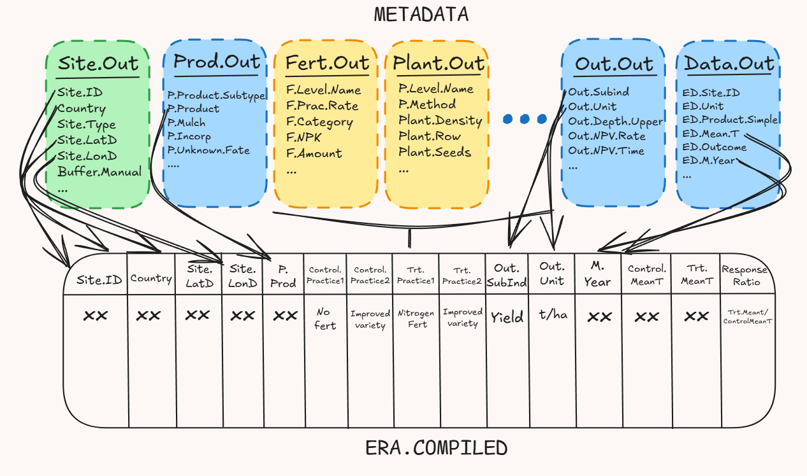
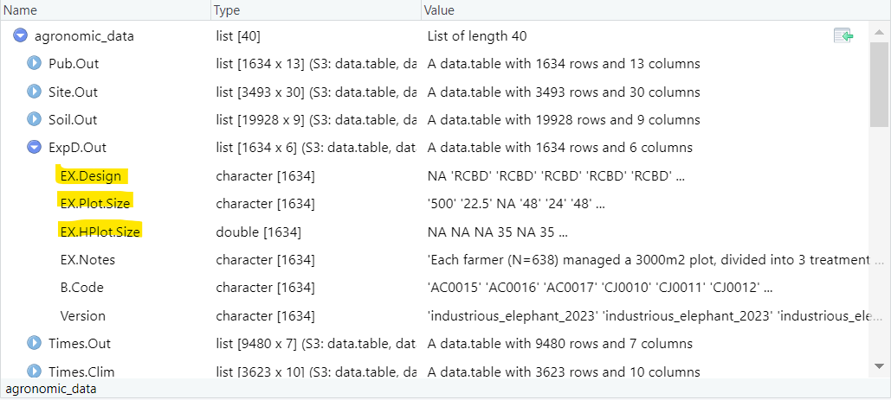
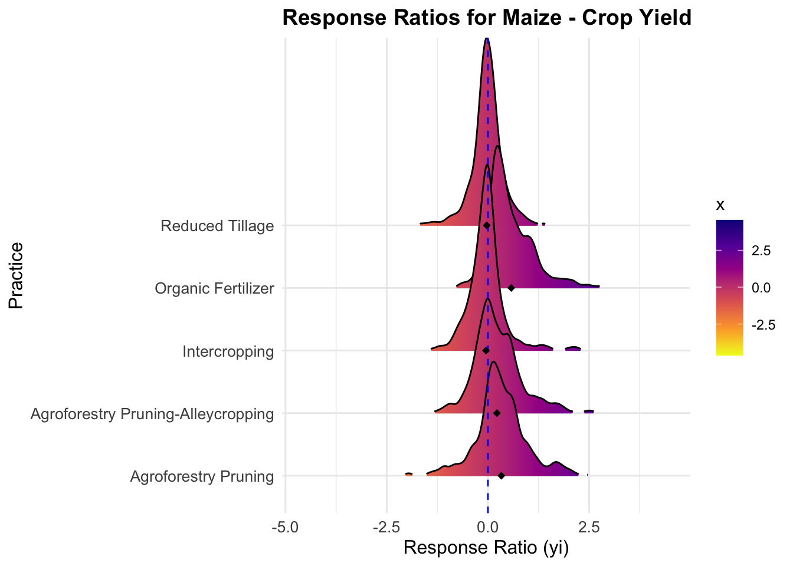

Namita Joshi & Peter Steward (Alliance of Bioversity International & CIAT)
Published
April 2, 2025
This vignette will guide you throgh the agronomy data available within the Evidence for Resilient Agriculture (ERA). The dataset serves as a critical resource for understanding agricultural resilience, specifically focusing on agriculture systems and their adaptation to climate change. If you are interested in livestock please see ERL.
We will cover the following:
What is ERA:
1. Introduction
2. Extraction template
3. Understanding the different data formats of ERA
Downloading the data:
1. Downloading the ERA.Compiled pre-cooked comparisons data
2. Downloading the data tables
Exploring the data:
1. Sub-setting the data to agronomy
2. Exploring geographic locations of studies available
3. Exploring the agronomic practices of studies available
4. Common outcomes reported
An example of an analysis you could do with ERA
1 What is ERA?
1.1 Introduction
Evidence for Resilient Agriculture (ERA) helps address the gap. Started in 2012, ERA was envisaged to evaluate the evidence base of Climate-Smart Agriculture (CSA)—that is, agriculture that delivers productivity, resilience, and climate change mitigation outcomes simultaneously. However, the technologies included within ERA such as agroforestry, intercropping, and crop rotations, among many others are common features of agroecology, regenerative agriculture, nature-based solutions, ecosystem-based adaptation, sustainable land management, and other approaches as are many of the outcome indicators such as yield, net economic returns, soil organic carbon, land equivalent ratio, labour required, and more. This means that ERA is relevant for various perspectives on development and is flexible to allow users to define ‘effectiveness’ or ‘work’ consistently with their worldview.
ERA is a comparatively large agricultural meta-dataset in terms of number of technologies, outcomes, and studies. ERA (version = era_compiled-v1.0-mh_2025-03-19.2-sc_2025_01_30.1-ie_2025_03_19.1-2025-03-28.1) includes 193835 observations from 2902 peer-reviewed agricultural experiments that took place in Africa between 1934 and 2022. Together, these data compare how changing more than 451 combinations of agronomic, livestock, or tree management technologies affect more than 97 indicators of productivity, resilience, and greenhouse gas emissions and/or carbon stocks. The experiments were identified via Web of Science and Scopus and were evaluated against predetermined inclusion criteria: (i) location, (ii) technology and outcome relevance, (iii) data on both a new and conventional technology, and (iv) inclusion of primary data.
Data are extracted using an excel template to create a complex data-model describing the context of a numerical experimental result. Control vs treatment comparison are not defined in the extraction template. Instead complex logic is applied to the data model to generate a simplified table of valid comparisons (we refer to this as ERA.Compiled).
The comparison table includes over 135 fields describing each study’s geospatial location in WGS1984 (EPSG:4326) co-ordinate system, (Latitude,Longitude), planting, harvest, and outcome measurement dates, experimental design, management treatments (i.e., which are combinations of technologies used), and outcomes. The system can handle intercropping and temporal sequences of management activities including crop rotations. The comparison table can be enriched by connecting back to the complex data model.
1.2 Extraction template
Over the years of ERA, several versions of the extraction template have been developed. However, the most widely used and thoroughly tested version is the Excel macro-enabled workbook. In this format, each study is documented in a separate Excel file, with individual tabs dedicated to different components of the study—such as site information, soil characteristics, management practices, and outcomes. The work book contains the following sections:
Pub = Publication: capture bibliographic data about an experiment here.
Site & Site Soils = captures information about experimental sites, any detailed information about soil variables should be captured in Site.Soils
ExpD = Experimental design, captures information about the number of study replicates, plot sizes, etc.
Practices (pale yellow tabs) = These tabs collect information about the agricultural management practices used in an experiment. Within tabs you can record base practices which apply to all treatments (e.g. 50kg of 60-30-30 NPK was applied to all treatments) or experimental practices that different between treatments (e.g. one treatment used straw mulch and another did not). Each set of experimental practices within a practice tab creates named building blocks that you will combine in the Make.Trt tab to create treatments. Base practices you do not need to consider again once they are entered in the practice tabs, they also do not require naming as the spreadsheet should autopopulate the name field with “base”.
Many practice tabs will require you to select and name a practice method that relates to a code in ERA practice definitions, this part of the data entry is critical. After you have chosen a method and named a practice you can often scroll down to tables that can collect more detail information about how the practice was implemented. There are also notes sections where you can copy paste important experimental information that you do no think the workbook captures well. Each tab is a theme that represents a set of related practices:
Chems = Chemical applications (applications of herbicides, fungicides, insecticides, etc.)
Mulch = Materials that are not from crops in the experimental plot (record these in the residues tab) applied to the surface of the plot as a mulch. Records the type of mulch & application details . Does not include compost or manures (use the nutrients tab).
Nutrients = Inputs/fertilizers added to a plot designed to improve/increase/provide nutrients for crop growth. Nutrients can include inorganic fertilizers, compost, manure, micronutrients, biochar, biofertilizers, biosolids and other organic amendments. Records the type of fertilizer & application details.
Comp = Composition of organic mulch or nutrient materials.
pH = Materials & application rates of materials used for amendment of soil pH (e.g. liming).
Weed = Physical (not chemical) weeding events (typically hand weeding).
Make.Trt = Create & name treatments by combining the experimental practices entered in the practice tabs.
Intercropping = Combine the crop specific treatments created in the Make.Trt tab to describe intercropping systems.
Time.Seq (Rotations) = Create temporal sequences of treatments and/or intercrops to reflect, for example, crop rotations or fallows.
EU&Out = Experimental Unit & Outcomes: Choose the experimental units (typically crop or animal commodities) and experimental outcomes for which data are presented.
Times = Select the cropping seasons or years for which data are presented.
EnterData = Captures values and associated errors for the experimental treatments, products, outcomes and times specified in the previous tabs. Do not start data entry until you’ve completed all the previous tabs.
Each of the tables within the front end of the excel feeds are imported using R to generate tables that form a data model. These tables provide you with detailed information from each study, e.g fertilizer applied, timing of fertilizer and so on.
The main tables are:
Pub.Out : Publication information, DOIs, ERA template version and project.
Times.Out : Measurement periods for which experimental results are reported (typically growing seasons).
Times.Clim : Climate information for locations x measurement periods recorded in Times.Out (e.g. rainfall for particular growing season).
Prod.Out : Crop or animal commodity.
Var.Out : Variety and any usual associated information reported.
Till.Out : Tillage management.
Plant.Out,Plant.Method : Planting information (density, arrangement, thinning, etc.).
PD.Codes,PD.Out: Management practices that relate to improved timing of planting activities and information on planting and harvest dates.
Fert.Out,Fert.Method,Fert.Comp: Detailed fertilizer management and composition of organic fertilizers.
Chems.Code,Chems.Out,Chems.AI : Chemicals applications (pesticides, veterinary medicines, and chemicals that do not fit the definition of a fertilizer).
Res.Out,Res.Method,Res.Comp : Information on mulching or crop residue management.
Har.Out :Improved harvesting.
pH.Out : pH management.
WH.Out : Water harvesting practices.
Irrig.Codes,Irrig.Methods: Irrigation management practices and applications.
AF.Out,AF.Trees: Agroforestry management and tree species and density.
Int.Out : Intercropping management.
Rot.Out``Rot.Seq,Rot.Seq.Summ : Crop rotations or other temporal sequence of managment activities.
Out.Out,Out.Econ : The Outcomes reported in the experiment and any additional context required for understanding them (e.g. discount rate and time period for economic outcomes).
Data.Out : Reported values and errors for combinations of outcome, commodity, management (treatment, intercrop, and/or rotation), location, and time (measurement period).
The data model also makes use of a large controlled vocabulary (the master codes), which is described later in this document. We aspire to develop the controlled vocabulary into an ontology for agricultural meta-analysis. A beta-version for livestock can be found here
More detailed documentation of the ERA agronomy data model is available here.
1.4 Comparisons table
In an attempt to make ERA data easily usable, we provide a table of control vs. treatment comparisons (ERA.Compiled). This is a flat excel file that pulls only essential fields from each data table table to create rows of treatment versus control. The table does not include detailed descriptions of management practices, but it can be connected back to the ERA data model if specific management information is required.
It should be noted that more studies are available in the comparisons table than the data model. This is because the earliest iteration of ERA used this flat template (ERA.Compiled) to extract data. We do not have the resources to convert all extractions to the data model.
Below is a simple conceptional framework of how ERA.Compiled is generated from the data tables.

1.5 Controlled vocabulary
ERA uses a structured controlled vocabulary to ensure consistency and harmonization across thousands of experimental observations. This vocabulary underpins the data model and comparison table by standardizing the names and attributes of practices, outcomes, and management components. It is compiled into an Excel workbook (era_master_sheet.xlsx) and is essential for:
Defining practice types (e.g., fertilizer, tillage, variety)
Classifying input materials (e.g., specific fertilizer types or tree species)
Linking outcomes to clear definitions and measurement units
Supporting interoperability and reproducibility in meta-analyses
The vocabulary is organized into multiple sheets, each corresponding to a different concept area, including:
prod: commodity types and product subtypes
fert: fertilizer types
chem: chemical types (e.g. pesticides)
chem.comm: commercial chemical names
chem.ai: active ingredients
trees: agroforestry tree species
vars: crop varieties and associated traits
out: outcome subindicators
prac: subpractices and method types (e.g. planting method, tillage type)
residues: residue management material types
These vocabularies are linked to the main ERA data tables via foreign key relationships in the dm data model. For example, the Fert.Method table contains a column F.Type, which links to the fert sheet of the master codes. This structure ensures that the dataset can be queried and interpreted accurately at scale.
A future goal is to evolve this vocabulary into a full ontology for agricultural meta-analysis, aligning it with existing semantic web and ontology standards. A beta-version of the livestock ontology is already underway.
The most up-to-date version of the vocabulary can be accessed here:
Data is openly available for download from the S3 Bucket s3://digital-atlas/era/data/.
2.1 Download controlled vocabulary
This section downloads and imports the ERA controlled vocabulary, which standardizes the naming of practices, products, and outcomes across studies. Both R and Python code examples are provided.
R code:
Code
# Download the era master vocab ######era_vocab_url <-"https://github.com/peetmate/era_codes/raw/main/era_master_sheet.xlsx"era_vocab_local <-file.path(dl_dir, basename(era_vocab_url))download.file(era_vocab_url, era_vocab_local, mode ="wb") # Download and write in binary mode# Import the vocabsheet_names <- readxl::excel_sheets(era_vocab_local)sheet_names <- sheet_names[!grepl("sheet|Sheet", sheet_names)]# Read each sheet into a list named era_master_codesera_master_codes <-sapply( sheet_names,FUN =function(x) { data.table::data.table(readxl::read_excel(era_vocab_local, sheet = x)) },USE.NAMES =TRUE)
python code:
Code
# Note: This is a GPT-generated Python translation and requires validation.import osimport requestsimport pandas as pd# Define download directorydl_dir ="era_master_codes"os.makedirs(dl_dir, exist_ok=True)# Define URL and local pathera_vocab_url ="https://github.com/peetmate/era_codes/raw/main/era_master_sheet.xlsx"era_vocab_local =os.path.join(dl_dir, os.path.basename(era_vocab_url))# Download the file if it doesn't already existif not os.path.exists(era_vocab_local): response =requests.get(era_vocab_url) with open(era_vocab_local, "wb") as f:f.write(response.content)# Read all sheets except those with "sheet" in the namexls =pd.ExcelFile(era_vocab_local)sheet_names = [s for s in xls.sheet_names if"sheet" not ins.lower()]# Load each sheet into a dictionaryera_master_codes = { sheet:xls.parse(sheet) for sheet in sheet_names}
How you can explore descriptions of major ERA concepts (Practices, Outcomes, Products):
import pandas as pdfrom IPython.display import display# Extract tables from the loaded Excel sheetspractices = era_master_codes["prac"]outcomes = era_master_codes["out"]products = era_master_codes["prod"]# Display tables with scrollable options in JupyterLab/Notebookwith pd.option_context('display.max_rows', 20, 'display.max_columns', None):display(practices.style.set_table_attributes("style='display:inline; float:left; margin-right:20px;'"))display(outcomes.style.set_table_attributes("style='display:inline; float:left; margin-right:20px;'"))display(products.style.set_table_attributes("style='display:inline; float:left; margin-right:20px;'"))
2.2 Download data model
This section connects to the public S3 bucket, identifies the latest agronomic ERA data set, downloads it locally, and loads it into memory.
R code:
Code
# Create an S3 filesystem handles3 <- s3fs::S3FileSystem$new(anonymous =TRUE)era_s3 <-"s3://digital-atlas/era"# List files in the s3 bucketall_files <- s3$dir_ls(file.path(era_s3, "data"))# Filter for the "agronomic" RData file, selecting the most recent versiontarget_file <-tail(grep(".RData", grep("agronomic", all_files, value =TRUE), value =TRUE),1)# Define a local path for saving the downloaded filesave_path <-file.path(dl_dir, basename(target_file))# Download the file if it does not exist alreadyif (!file.exists(save_path)) { s3$file_download(target_file, save_path, overwrite =TRUE)}# Load the agronomy data using the miceadds packageagronomic_data <- miceadds::load.Rdata2(file =basename(save_path),path =dirname(save_path))
python code:
Code
# Note: This is a GPT-generated Python translation and requires validation.import osimport s3fsimport re# Define download directorydl_dir ="downloaded_data"os.makedirs(dl_dir, exist_ok=True)# Set up anonymous S3 filesystems3 =s3fs.S3FileSystem(anon=True)era_s3 ="digital-atlas/era/data"# List files in the S3 bucketall_files =s3.ls(era_s3)# Filter for latest agronomic .RData fileagronomic_files = [f for f in all_files if"agronomic"in f and f.endswith(".RData")]target_file =sorted(agronomic_files)[-1] if agronomic_files else None# Define local save pathsave_path =os.path.join(dl_dir, os.path.basename(target_file))# Download file if not already presentif not os.path.exists(save_path): with s3.open(target_file, 'rb') as src, open(save_path, 'wb') as dst:dst.write(src.read())# Note: RData file loading requires R. Consider using `rpy2` if needed.
Once the data is downloaded, it will appear as the screenshot below.
Each of the tables can be extracted individual and combined with one another based on a common piece of information. For example, the B.Code, which is present in each tab, can be used to match information from one particular paper across all these tables.

To get a better understanding of what the fields in the data model are you can view data a catalog by running the following code:
R code:
Code
# Access era_fields from era_master_codesera_fields <- era_master_codes$era_fields_v2# Filter to the version relevant to the agronomy data modelera_fields<-era_fields[industrious_elephant_2023==T,.(Table,Field,Display_Name,Field_Description,Data_Type)]names(era_fields)#> [1] "Table" "Field" "Display_Name" #> [4] "Field_Description" "Data_Type"
python code:
Code
# Access and filter the era_fields_v2 sheetera_fields_df = era_master_codes["era_fields_v2"]# Filter to the version relevant to the agronomy data modelfiltered_fields = era_fields_df[era_fields_df["industrious_elephant_2023"] == True]# Select specific columnsera_fields = filtered_fields[["Table", "Field", "Display_Name", "Field_Description", "Data_Type"]]# Show column namesprint(era_fields.columns.tolist())
Note the data catalog era_master_codes$era_fields_v2 is a work in progress, we are currently revising it and it should be completed by May 2025.
This section retrieves the most recent version of the ERA.Compiled comparisons table from the ERA S3 bucket, saves it locally, and loads it for use.
R code:
Code
s3 <- s3fs::S3FileSystem$new(anonymous =TRUE)era_s3 <-"s3://digital-atlas/era"# List files in the s3 bucketall_files <- s3$dir_ls(file.path(era_s3, "data"))# Filter for the "agronomic" RData file, selecting the most recent version# Filter for the correct compiled comparison CSV(target_file_compiled <- all_files[grepl("era_compiled.*mh.*csv$", all_files, ignore.case =TRUE) &!grepl("econ", all_files, ignore.case =TRUE) ] |>tail(1))#> [1] "s3://digital-atlas/era/data/era_compiled-v1.0-mh_2025-03-19.2-sc_2025_01_30.1-ie_2025_03_19.1-2025-03-28.1.csv"# The file will start era_compiled, should not contain econ and the most recent version will have the most recent# date at the end of the file name.# Define a local path for saving the downloaded filesave_path <-file.path(dl_dir, basename(target_file_compiled))# Download the file if it does not exist alreadyif (!file.exists(save_path)) { s3$file_download(target_file_compiled, save_path, overwrite =TRUE)}# Load the dataERA_Compiled <-fread(save_path)
python code:
Code
import osimport s3fsimport pandas as pd# Set up S3 accessfs =s3fs.S3FileSystem(anon=True)era_s3 ="digital-atlas/era/data"dl_dir ="era_master_codes"os.makedirs(dl_dir, exist_ok=True)# List files in the S3 directoryall_files =fs.ls(era_s3)# Filter for most recent compiled CSV (excluding "econ")compiled_files =sorted([ f for f in all_filesif"era_compiled"inf.lower() and "mh"inf.lower() and f.lower().endswith(".csv") and "econ" not inf.lower()])# Select the most recent filetarget_file = compiled_files[-1]save_path =os.path.join(dl_dir, os.path.basename(target_file))# Download if not already savedif not os.path.exists(save_path): with fs.open(target_file, 'rb') as fsrc, open(save_path, 'wb') as fdst:fdst.write(fsrc.read())# Load the dataERA_Compiled =pd.read_csv(save_path)
An example of the content of ERA.Compiled
To get a better understanding of what the fields in the comparisons table are you can view data a catalog by running the following code:
R code:
Code
# Access era_fields from era_master_codesera_fields_comp <- era_master_codes$era_fields_v1
python code:
Code
# Access and filter the era_fields_v2 sheetera_fields_comp = era_master_codes["era_fields_v1"]
Note the data catalog era_master_codes$era_fields_v2 is a work in progress, we are currently revising it and it should be completed by May 2025.
Unhide the code to see how we sub-set the data to agronomy papers only. Product.Type has either Animal or Plant and therefore in this example, we will subset to Plant
import pandas as pd# Assuming ERA_Compiled is your DataFrameERA_Compiled_ag = ERA_Compiled[ERA_Compiled['Product.Type'].str.contains("Plant", na=False)]
3.2 Exploring geographic locations of studies available
We collected country, site name paraphrased from study, and spatial coordinates when given. Location’s coordinates were verified in Google Maps, as they were often inaccurately reported. Enumerators also recorded a measure of spatial uncertainty. When authors reported decimal degrees and there was no correction required to the co-ordinates, then uncertainty was measured in terms of the value’s precision. When the location was estimated using Google Maps, the spatial uncertainty value was measured in terms of the precision of the site location description (e.g., a single farm or region) and the enumerator’s visual interpretation of land use at and near the coordinates. Observation’s geographic coordinates were collected to facilitate linking the data compiled in ERA to external databases, for example related to climatic and environmental factors not necessarily reported in the original study.
R code:
Code
# Ensure coordinates are numericERA.Compiled_ag <- ERA.Compiled_ag %>%mutate(Latitude =as.numeric(Latitude),Longitude =as.numeric(Longitude) ) %>%filter(!is.na(Latitude) &!is.na(Longitude))# Count the number of papers per countrypaper_counts <- ERA.Compiled_ag %>%group_by(Country) %>%summarise(N_Papers =n_distinct(Code), .groups ="drop")# Load only African countriesworld <-ne_countries(scale ="medium", continent ="Africa", returnclass ="sf")# Fix Tanzania name if neededworld <- world %>%mutate(admin =if_else(admin =="United Republic of Tanzania", "Tanzania", admin))# Ensure CRS is consistentworld <-st_transform(world, crs =4326)# Convert combined_sites to spatial datasites_sf <-st_as_sf(ERA.Compiled_ag, coords =c("Longitude", "Latitude"), crs =4326, remove =FALSE)# Join paper counts to mapmap_data <- world %>% dplyr::select(admin, geometry) %>%rename(Country = admin) %>%left_join(paper_counts, by ="Country")# Plot the mapmap<-ggplot() +geom_sf(data = map_data, aes(fill = N_Papers), color ="white") +geom_point(data = sites_sf, aes(x = Longitude, y = Latitude), shape =21, color ="black", fill ="white", size =2, alpha =0.5) +scale_fill_viridis_c(option ="mako",direction =-1,na.value ="gray95" ) +labs(fill ="Agronomy Papers") +theme_minimal() +theme(legend.position ="bottom", # ⬅ Move to bottomlegend.direction ="horizontal", # ⬅ Make it horizontallegend.title =element_text(size =12, face ="bold"),legend.text =element_text(size =10),axis.text =element_blank(),axis.ticks =element_blank(),axis.title =element_blank(),panel.grid =element_blank() ) +guides(fill =guide_colorbar(barwidth =10, barheight =0.5, title.position ="top", title.hjust =0.5 )) +coord_sf(xlim =c(-20, 55), ylim =c(-35, 38), expand =FALSE)# Display the mapmap
python code:
Code
# Python equivalent code:import pandas as pdimport numpy as npimport geopandas as gpdimport matplotlib.pyplot as plt# Ensure coordinates are numericERA_Compiled_ag['Latitude'] =pd.to_numeric(ERA_Compiled_ag['Latitude'], errors='coerce')ERA_Compiled_ag['Longitude'] =pd.to_numeric(ERA_Compiled_ag['Longitude'], errors='coerce')ERA_Compiled_ag =ERA_Compiled_ag.dropna(subset=['Latitude', 'Longitude'])# Count the number of papers per countrypaper_counts = ( ERA_Compiled_ag.groupby('Country').agg(N_Papers=('Code', 'nunique')).reset_index())# Load only African countries using Natural Earth dataworld =gpd.read_file(gpd.datasets.get_path('naturalearth_lowres'))world = world[world['continent'] =='Africa']# Fix Tanzania name if neededworld['admin'] = world['admin'].replace("United Republic of Tanzania", "Tanzania")# Ensure CRS is consistentworld =world.to_crs(epsg=4326)# Convert ERA_Compiled_ag to spatial datasites_sf =gpd.GeoDataFrame( ERA_Compiled_ag,geometry=gpd.points_from_xy(ERA_Compiled_ag['Longitude'], ERA_Compiled_ag['Latitude']),crs="EPSG:4326")# Join paper counts to map: select only country names and geometry, rename and mergemap_data = world[['admin', 'geometry']].rename(columns={'admin':'Country'})map_data =map_data.merge(paper_counts, on='Country', how='left')# Plot the mapfig, ax =plt.subplots(figsize=(10, 8))# Plot African countries colored by N_Papers; missing values will appear in light graymap_data.plot(column='N_Papers',ax=ax,edgecolor='white',cmap='viridis',missing_kwds={'color':'gray95', 'edgecolor':'white'})# Plot site locationssites_sf.plot(ax=ax,marker='o',color='white',edgecolor='black',markersize=50,alpha=0.5)# Set plot limits to match the original R code coordinatesax.set_xlim(-20, 55)ax.set_ylim(-35, 38)ax.axis('off')# Add legend (customization may be needed to mirror ggplot's style)plt.legend(title='Agronomy Papers', loc='lower center', ncol=3)plt.tight_layout()plt.show()
3.3 Exploring the products of studies available
The Product.Subtype column in the ERA.Compiled_ag dataset contains the specific crop types examined in each study (e.g., "Maize", "Rice", "Wheat").
To accurately count how many unique studies (identified by Code) examined each crop, the following code processes and summarizes the data.
The figure below displays the distribution of crop categories in the dataset. It highlights the relative focus of studies across different crop types.
The largest category by far is Cereals, indicating that most studies in ERA are focused on cereal crops such as maize, wheat, rice, and sorghum.
This is followed by Legumes, Starchy Staples, and Vegetables, which also appear frequently in the dataset.
Categories such as Fodders, Cash Crops, and Fruits are represented to a lesser extent.
Each tile represents a crop category, and its size reflects the number of unique studies (Code) that included at least one crop from that category. The number in parentheses shows the count of studies for that group.
R code:
Code
prod_counts <- ERA.Compiled_ag %>%separate_rows(Product.Subtype, sep ="-") %>%group_by(Product.Subtype) %>%summarise(Count =n_distinct(Code), .groups ="drop") %>%mutate(label =paste0(Product.Subtype, " (", Count, ")"))tree_plot<-ggplot(prod_counts, aes(area = Count, fill = Count, label = label)) +geom_treemap(color ="white") +geom_treemap_text(colour ="black",place ="centre",grow =FALSE, # Disable growing to avoid oversized textreflow =TRUE,size =10# Adjust this value to control the actual text size ) +scale_fill_distiller(palette ="Greens", direction =1, guide ="none") +theme_minimal() +theme(plot.title =element_text(size =14, face ="bold"),legend.position ="none" )tree_plot
python code:
Code
# Python equivalent code:import pandas as pdimport squarifyimport matplotlib.pyplot as plt# Separate rows by "-" in the "Product.Subtype" columnprod_counts = ( ERA_Compiled_ag.assign(Product_Subtype=ERA_Compiled_ag['Product.Subtype'].str.split('-')).explode('Product_Subtype').groupby('Product_Subtype').agg(Count=('Code', 'nunique')).reset_index())# Create label as "Product.Subtype (Count)"prod_counts['label'] = prod_counts['Product_Subtype'] +" ("+ prod_counts['Count'].astype(str) +")"# Plot the treemapplt.figure(figsize=(10, 8))sizes = prod_counts['Count'].valueslabels = prod_counts['label'].values# Normalize sizes for colormap mappingnormed = sizes /sizes.max()colors =plt.cm.Greens(normed)squarify.plot(sizes=sizes, label=labels, color=colors, alpha=0.7)plt.axis('off')plt.title('Products Treemap', fontsize=14, fontweight='bold')# Set white borders for each rectanglefor patch inplt.gca().patches:patch.set_linewidth(1)patch.set_edgecolor('white')plt.show()
3.4 Exploring the agronomic practices within studies available
The following analysis explores the types of agronomic practices-referred to as “Themes” in the dataset.
Each study in ERA may be associated with multiple practices—for example, a study might examine both Soil Management and Nutrient Management.
For example, the theme ‘Soil Management’ include practices like green manure, crop residue, pH control, tillage, improved fallows. ‘Nutrient Management’ includes organic and inorganic fertilizer. This can be found in the practices within the mastercodes
# Python equivalent code:import pandas as pdimport numpy as npfrom pywaffle import Waffleimport matplotlib.pyplot as pltimport matplotlib as mpl# Separate rows by "-" in the "Theme" column and count unique 'Code'sag_counts = ( ERA_Compiled_ag.assign(Theme=ERA_Compiled_ag['Theme'].str.split('-')).explode('Theme').groupby('Theme').agg(Count=('Code', 'nunique')).reset_index())ag_counts['label'] = ag_counts['Theme'] +" ("+ ag_counts['Count'].astype(str) +")"# Define parts per square (e.g. 1 square = 20 studies)parts_per_square =20# Prepare waffle input: compute squares per themewaffle_data =ag_counts.copy()waffle_data['squares'] = (waffle_data['Count'] / parts_per_square).round().astype(int)waffle_data = waffle_data[waffle_data['squares'] >0]# Create a dictionary for the waffle plot: keys are labels, values are squareswaffle_vec =dict(zip(waffle_data['label'], waffle_data['squares']))# Generate a color palette similar to RColorBrewer "Blues"n_categories =len(waffle_data)colors = [mpl.cm.Blues(i) for i innp.linspace(0.3, 0.7, n_categories)]# Plot the waffle chartfig =plt.figure(FigureClass=Waffle,rows=10,values=waffle_vec,colors=colors,legend={'loc':'lower center','bbox_to_anchor': (0.5, -0.1),'ncol':3,'fontsize':10 },title={'label':'Practices Waffle Chart', 'loc':'center'},figsize=(10, 8))plt.show()
3.5 Exploring outcomes reported in the studies available
The ERA dataset tracks outcomes of agronomic interventions across several broad categories—called Pillars—such as productivity, environmental impact, and more. Each pillar includes more specific indicators like yield, GHG emissions, soil organic carbon, and others.
# Python equivalent code:import pandas as pdimport numpy as npimport matplotlib.pyplot as pltimport seaborn as sns# Aggregate data by pillar and indicator# Trim whitespace from 'Out.Pillar' and filter out empty/missing valuesout_counts =ERA_Compiled_ag.copy()out_counts['Out.Pillar'] = out_counts['Out.Pillar'].astype(str).str.strip()out_counts = out_counts[ (out_counts['Out.Pillar'] !="") & (out_counts['Out.Pillar'].notna()) & (out_counts['Out.Ind'].notna())]# Group by Out.Pillar and Out.Ind, counting unique 'Code'out_counts = (out_counts.groupby(['Out.Pillar', 'Out.Ind'], as_index=False).agg(Num_Papers=('Code', 'nunique')))# Rename columns: Pillar = Out.Pillar, Indicator = Out.Indout_counts =out_counts.rename(columns={'Out.Pillar':'Pillar', 'Out.Ind':'Indicator'})# Sort indicators within each pillarout_counts =out_counts.sort_values(by=['Pillar', 'Indicator'])# Set categorical ordering:# For Indicator, levels are based on order of appearanceindicator_levels = out_counts['Indicator'].unique().tolist()out_counts['Indicator'] =pd.Categorical(out_counts['Indicator'], categories=indicator_levels, ordered=True)# For Pillar, use a fixed orderpillar_order = ["Productivity", "Resilience", "Mitigation"]out_counts['Pillar'] =pd.Categorical(out_counts['Pillar'], categories=pillar_order, ordered=True)# Define pillar colorspillar_colors = {"Productivity":"#FFCC66","Resilience":"#990000","Mitigation":"#8B4513"}# Create faceted bar plot: one subplot per Pillarpillars = [p for p in pillar_order if p in out_counts['Pillar'].cat.categories]num_pillars =len(pillars)fig, axes =plt.subplots(1, num_pillars, figsize=(5* num_pillars, 5), sharey=False)# Ensure axes is iterable when only one subplot existsif num_pillars ==1: axes = [axes]for ax, pillar inzip(axes, pillars): subset = out_counts[out_counts['Pillar'] == pillar]ax.bar(subset['Indicator'], subset['Num_Papers'],color=pillar_colors.get(pillar, "gray70"), width=0.8)ax.set_xlabel("Outcome Indicator", fontsize=12, fontweight='bold', labelpad=10)ax.set_ylabel("Number of Papers", fontsize=12, fontweight='bold')ax.tick_params(axis='x', labelsize=10, rotation=45)ax.tick_params(axis='y', labelsize=10)ax.set_ylim(0, subset['Num_Papers'].max() +50)ax.set_title(pillar, fontsize=12, fontweight='bold')# Remove grid and extra spines to mimic theme_minimal()ax.grid(False) ax.spines['top'].set_visible(False) ax.spines['right'].set_visible(False)plt.tight_layout()plt.show()
4 An example of an analysis you could do with ERA.Compiled
Lets assume you want to explore the impact of agriculture technologies on Maize yields. ERA only considers treatment comparisons. Each observation encodes a comparison between two treatments.
The following principles assisted in consistent comparisons of treatment outcomes across studies:
New versus common treatment. A new technology versus a control, which is typically farmers’ conventional technologies.
Additive complexity. An improved technology / set of technologies to a simpler option, e.g., agroforestry+fertilizer vs agroforestry alone.
Agriculture to agriculture. Agricultural systems are never compared to natural systems. For example, we can compare soil organic carbon in mulch versus no mulch systems, but not versus natural or semi-natural vegetation.
Same implementation levels. Comparisons were made within the same ‘level’ of implementation. For example, 40 kg N/ha was compared with other treatments using 40 kgN/ha but not 20 kgN/ha.
All treatment details. All major characteristics of the treatments were coded, including seed variety, tillage type, weed control, tree species, and chemical applications, among others, up to 13 labels per treatment.
In-year comparisons. Only comparisons of treatments and outcomes that occur in the same year or season were included. Residual effects, e.g., of phosphorus applied in year one with yield in year three, were not recorded.
Include all possible treatments. All treatments, and their component technologies, in a study were coded if they formed part of valid comparison.
Based this, a response ratio is calculated by MeanT/MeanC
R code:
Code
filtered_data <- ERA.Compiled_ag %>%filter(Product =="Maize", Out.SubInd =="Crop Yield", !is.na(yi))# Step 2: Keep only practices with at least 3 values and some variationvalid_practices <- filtered_data %>%group_by(PrName) %>%filter(n() >=3, sd(yi, na.rm =TRUE) >0) %>%ungroup()# Step 3: Get top 5 PrName by number of rowstop_practices <- valid_practices %>%count(PrName, sort =TRUE) %>%slice_head(n =5) %>%pull(PrName)# Step 4: Final filtered dataridge_data <- valid_practices %>%filter(PrName %in% top_practices)# Step 5: Plotridge_plot <-ggplot(ridge_data, aes(x = yi, y = PrName, fill = ..x..)) +geom_density_ridges_gradient(scale =3, rel_min_height =0.01, color ="black") +geom_vline(xintercept =0, linetype ="dashed", color ="blue") +stat_summary(aes(x = yi),fun = mean,geom ="point",color ="black",shape =18,size =2 ) +scale_fill_viridis_c(option ="C", direction =-1) +labs(title ="Response Ratios for Maize - Crop Yield",x ="Response Ratio (yi)",y ="Practice" ) +theme_minimal() +theme(plot.title =element_text(face ="bold", size =14),axis.text =element_text(size =10),axis.title =element_text(size =12) )ridge_plot#> Picking joint bandwidth of 0.0954

python code:
Code
# Python equivalent code:import pandas as pdimport numpy as npimport matplotlib.pyplot as pltimport joypy# Step 1: Filter data for Product "Maize", Out.SubInd "Crop Yield", and non-missing yifiltered_data = ERA_Compiled_ag[ (ERA_Compiled_ag['Product'] =="Maize") & (ERA_Compiled_ag['Out.SubInd'] =="Crop Yield") & (ERA_Compiled_ag['yi'].notna())].copy()# Step 2: Keep only practices with at least 3 values and some variation in yidef valid_group(df):return (len(df) >=3) and (df['yi'].std(ddof=0) >0)valid_practices =filtered_data.groupby('PrName').filter(valid_group)# Step 3: Get top 5 PrName by number of rowstop_practices = (valid_practices['PrName'].value_counts().nlargest(5) .index.tolist())# Step 4: Final filtered dataridge_data = valid_practices[valid_practices['PrName'].isin(top_practices)].copy()# Step 5: Plot ridgeline plot using joypy# Compute the mean of yi for each practice for summary pointsmean_values =ridge_data.groupby('PrName')['yi'].mean()# Create the ridgeline plotfig, axes =joypy.joyplot( ridge_data,by="PrName",column="yi",kind="kde",overlap=1,colormap=plt.cm.viridis,linewidth=1,linecolor="black",fade=True,figsize=(10, 6))# Add a vertical dashed line at x = 0plt.axvline(x=0, linestyle="dashed", color="blue")# Add mean points for each practice# Joypy orders groups alphabetically by default; get that order for accurate y positionspractices =sorted(ridge_data['PrName'].unique())y_positions = {pr: i for i, pr inenumerate(practices)}for pr, mean_val inmean_values.items():# The y position for each group corresponds to its index in the sorted list y = y_positions[pr]plt.plot(mean_val, y, marker="D", color="black", markersize=6)plt.title("Response Ratios for Maize - Crop Yield", fontsize=14, fontweight="bold")plt.xlabel("Response Ratio (yi)", fontsize=12, fontweight="bold")plt.ylabel("Practice", fontsize=12, fontweight="bold")plt.tight_layout()plt.show()
5 For more details or to explore collaborative opportunities: